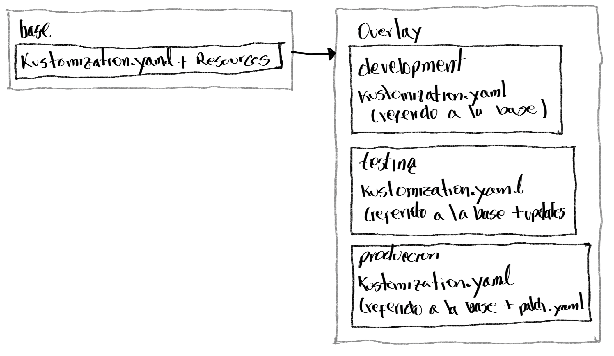

Capitulo 1 - Gestión Declarativa de recursos
Desplegar y actualizar aplicaciones desde manifiestos de recursos y parametrizados para diferentes ambientes
- Desplegar y actualizar aplicaciones desde manifiestos de recursos que se alojan como archivos YAML
- desplegar y actualizar aplicaciones desde manifiestos de recursos que se realizan desde Kustomize
Manifiesto de recursos
Una aploicación de K8S es un conjunto de múltiples recurtsos que trabajan en conjunto. Cada recursos tiene una definición y una configuración. Muchos recusos comparten configuración común de atributos para que operen correctamente. Los comandos de configuración se ejecutan en un solo momento de tiempo para ejecutar correctamente. El comando imperativo configura una al tiempo.
El modo imperativo tiene varias desventajas: - Deficiencia al reproducir - No se puede controlar las versiones - No tiene soporte para GitOps
Por ello la forma declarativa en flujos es la opción mas recomendada para desplegar y actulizar aplicaciones de K8S.
Flujos imperativos
Son utilizados para desarrollo y pruebas, como el siguiente ejemplo:
kubectl create deployment db-pod --port 3306 --image registry.ocp4.example.com:8443/rhel8/mysql-80
En esta opción kubectl set env deplyment se pueden enviar parámetros de configuranción dentro del pod en ejecución. Estos cambios son enviados como variables extras para que el pod inicie si los valores no los tiene y resolver el problema de funcionamiento y iniciar el pod correctamente.
kubectl set env deployment/db-pod \
MYSQL_USER='user1' \
MYSQL_PASSWORD='mypa55w0rd' \
MYSQL_DATABASE='items'
Usando los comandos imperativos se pueden agregar componentes como services, routes, montaje de volumenes, y claim de volúmenes persistentes. Esto sirve mucho como experimentación y testing, sin embargo, trabajar con demasiadas lineas se fragmenta el trabajo.
Usando comando declarativo
Esta forma pemirte tomar el estado previsto de la sucuencia y llevarlo a un archivo de manifiesto. El modo declarativo usa un archivo o un conjunto de archivos manifiesto.
Creando manifiestos de K8S
Crear un manifiesto de K8S puede tomar mucho tiempo si se quiere hacer desde cero todo su contenido, sin embargo existen técnicas para proveer ese inicio de un manifiesto
- Usar la vista YAML de un recurso desde la consola Web
- Usando el comandos imperaticos con la opción
--dry-run=clientpara generar el manifiesto de acuerdo a los comandos generados, así:
kubectl create deployment hello-openshift -o yaml \
--image registry.ocp4.example.com:8443/redhattraining/hello-world-nginx:v1.0 \
--save-config \
--dry-run=client \
> ~/my-app/example-deployment.yaml
| opción | explicación |
|---|---|
--save-config |
Con esta opción se graba las configuraciones del recurso en kubectl.kubernetes.io/last-applied-configuration |
--dry-run=client |
Se evita que los recursos sean creados en el cluster |
ejmplo muestra lo mínimo de un manifiesto de un deplyment, no productivo
apiVersion: apps/v1
kind: Deployment
metadata:
namespace: resource-manifests
labels:
app: hello-openshift
name: hello-openshift
spec:
replicas: 2
selector:
matchLabels:
app: hello-openshift
template:
metadata:
labels:
app: hello-openshift
spec:
containers:
- image: quay.io/redhattraining/hello-world-nginx:v1.0
name: hello-world-nginx
ports:
- containerPort: 8080
protocol: TCP
Se puede crear un manifiesto para cada recurso que se gestiona, como alternativa, se puede cerar un solo manifiesto y allí usando --- se puede separar en partes cada manifiesto:
---
apiVersion: apps/v1
kind: Deployment
metadata:
namespace: resource-manifests
annotations:
...output omitted...
---
apiVersion: v1
kind: Service
metadata:
namespace: resource-manifests
labels:
app: hello-openshift
name: hello-openshift
spec:
...output omitted...
Flujos declarativos
Y se puede crear el recurso de acuerdo a la ubicación de los archivos yml en el cliente de kbctl
kubectl create -f path-to-yaml # puede ser la URL del yml
kubectl create -R -f ~/mi-applicacion
deployment.apps/hello-openshift created
service/hello-openshift created
tree mi-aplicacion
mi-aplicacion
├── example_deployment.yaml
└── service
└── example_service.yaml
Actualizando recursos
Los recursos ya creados se pueden actualizar con la opción kubectl apply
kubectl apply -f ~/my-app/example-deployment.yaml --dry-run=server --validate=true
Ejecutar kubectl create -f cuando el recurso está running sale error, en cambio con el comando kubectl apply -f al ser declarativo tiene en cuenta el estado del recurso en el clúster y el estado en el manifiesto
Validación de YAML
Antes de aplicaer los cambios en un recurso, se puede aplicar el argumento --dry-run=server y --validate=true para revisar posibles errores
| opción | explicación |
|---|---|
--dry-run=server |
Envía solicitud al servidor sin mantener el recurso |
--validate=true |
opciómn utilizada pára validar el input y si el request no es válido falla |
Ejemplo:
kubectl apply -f ~/my-app/example-deployment.yaml --dry-run=server --validate=true
deployment.apps/hello-openshift created (server dry-run)
Comparación de recursos
Con el comando kubectl diff se puede revisar las diferencias entre los objetos activos y los objetos en el manifiesto
kubectl diff -f example-deployment.yaml
...output omitted...
diff -u -N /tmp/LIVE-2647853521/apps.v1.Deployment.resource...
--- /tmp/LIVE-2647853521/apps.v1.Deployment.resource-manife...
+++ /tmp/MERGED-2640652736/apps.v1.Deployment.resource-mani...
@@ -6,7 +6,7 @@
kubectl.kubernetes.io/last-applied-configuration: |
...output omitted...
creationTimestamp: "2023-04-27T16:07:47Z"
- generation: 1 1
+ generation: 2
NOTA Si hay cambios en el recurso, es necesario reiniciar los pod's por medio de un rollout, o bajando las réplicas a una menor expresión (1) y luego volverlas a subir
Parchado de recursos Kubernetes
Es la modificación a partir de una parte o un archivo json/yml a un recurso en OCP. Se utiliza el comando oc patch. Se utiliza el argumento -p para agregar el la parte necesaria:
oc patch deployment hello -p '{"spec":{"template":{"spec":{"resources":{"requests":{"cpu": "100m"}}}}}}'
O utilizando el archivo completo:
oc patch deployment hello --patch-file ~/volume-mount.yaml
Kustomize Overlays
- Desplegar aplicaciones desde un manifiesto de recursos que son ampliados por Kustomize
Cuando se usa K8S, multiples equipos usan ambientes para desarrollo, staging, testing y producción para desplegar aplicaciones, Cada ambiente tiene pequeños cambios en su configuración, por ejemplo: el número de réplicas para cargas de trabajo en producción es menor en un ambiente de testing y es acá donde Kustomize soporta estos diferentes casos.
El comando oc como el comando kubectl soportan la herramienta kustomize
Estructura de archivos Kustomize
Se trabaja con un directorio de archivos que contiene el archivo kustomization.yaml al igual que los archivos de service, deployment y secret.
Base
En directorio base contiene el archivo kustomization.yaml el cual tiene una lista de campos de recursos que incluye todos los archivos de recursos, así:
base
├── configmap.yaml
├── deployment.yaml
├── secret.yaml
├── service.yaml
├── route.yaml
└── kustomization.yaml
apiVersion: kustomize.config.k8s.io/v1beta1
kind: Kustomization
resources:
- configmap.yaml
- deployment.yaml
- secret.yaml
- service.yaml
- route.yaml
Overlays
Es la capacidad de sobreponer los artefactos YAML que son declarativos o parches sobre las configuraciones generales sin modificar los archivos originales, con las sguiente estrutura ejemplo:

base
├── configmap.yaml
├── deployment.yaml
├── secret.yaml
├── service.yaml
├── route.yaml
└── kustomization.yaml
overlay
└── development
└── kustomization.yaml
└── testing
└── kustomization.yaml
└── production
├── kustomization.yaml
└── patch.yaml
Ejemplo del contenido de un archivo kutomization.yaml de un ambiente de desarrollo en el directorio overlay/deplyment:
apiVersion: kustomize.config.k8s.io/v1beta1
kind: Kustomization
namespace: dev-env
resources:
- ../../base
Otro ejemplo, se usa el ../../base para la aplicación frontend-app/overlay/development/kustomization.yaml para crear los recursos en el namespace dev_env.
Los siguientes campos tendrán los valores para todos los recursos en el archivo kustomization:
| Campo | Descripción, para todos los recusos |
|---|---|
namespace |
Se especifica el namespace |
namePrefix |
Se adiciona el nombre prefijo |
nameSuffix |
Se adiciona nombre de sufijo |
commonLabels |
Se adicionan etiquetas y a los selectors |
commonAnnotations |
Se adiciona anotacionesy a los selectors |
Uno puede personalizar para múltiples ambientes usando overlays & patching. Los parches utilizan 2 elementos: patch y target.
NOTA: Las llaves PatchesJson6902 & PatchesStrategicMerge estan deprecadas desdela versión Kustomize 5, fueron reeplazados con 1 sola llave
Ejemplo de un archivo kustomize.yaml de un directorio overlays/testing
apiVersion: kustomize.config.k8s.io/v1beta1
kind: Kustomization
namespace: test-env
patches:
- patch: |-
- op: replace
path: /metadata/name
value: frontend-test
target:
kind: Deployment
name: frontend
- patch: |-
- op: replace
path: /spec/replicas
value: 15
target:
kind: Deployment
name: frontend
resources:
- ../../base
commonLabels:
env: test
Se puede ver la lista de parches a actualizar, en el primero se realiza cambio en el nombre por frontend-test. Los campos del target el tipo y nombre del recurso a aplicar el parche por frontend-test. También se aplica un cambio en el número de rélicas. Al final, en resources tiene el path de el archivo kustomization.yaml con el cual se trabaja y se desplegarn los recursos y a continuación este es un ejemplo de ese archivo:
apiVersion: kustomize.config.k8s.io/v1beta1
kind: Kustomization
namespace: prod-env
patches:
- path: patch.yaml
target:
kind: Deployment
name: frontend
options:
allowNameChange: true
resources:
- ../../base
commonLabels:
env: prod
En este ejemplo anterior, se ve como en el campo de allowNameChange habilita el update para usar en el patch.
Por último, un ejemplo de como sería el contenido un archivo patch.yaml donde se aplica el update a un deplyment con el nombre frontend-prod y se especifica ek número de réplicas a 5
apiVersion: apps/v1
kind: Deployment
metadata:
name:`frontend-prod
spec:
replicas: 5
Vista y desplegar Recursos usando Kustomize
Visualizar los manifiestos sin aplicar los cambios en el cluster
kubectl kustomize overlay/production
Aplicar los cambios en el clúster:
kubectl apply -k overlay/production
Eliminar recursos usando Kustomize
oc delete -k overlay/production
Generadores Kustomize
Los ConfigMap tienen data no confidencial usando llaves-valor. Los secrets en cambio si son llaves-valor con data confidencial. Kustomize tiene los campos configMapGenerator y secretGenerator que generan ambos tipoos de recursos. Estos generadores pueden incluir archivos externor por lo que se puede utilizar archivos generados por otras herramientas o que están en sistemas diferentes y pueden ayudar a gestionar esre contenido.
ConfigMap Generator
Kustomize tiene un campo llamadao configMapGenerator que crea el mapa de configuración. La generación de estos mapas con Kustomize permite agregar un hash al name, y cualquier cambio (trigger) y genera un rolling update.
Ejemplo de un archivo kustomization.yaml con la descriipción anterior:
apiVersion: kustomize.config.k8s.io/v1beta1
kind: Kustomization
namespace: hello-stage
resources:
- ../../base
configMapGenerator:
- name: hello-app-configmap
literals:
- msg="Welcome!"
- enable="true"
Y del archivo del deployment.yaml:
apiVersion: apps/v1
kind: Deployment
metadata:
name: hello
labels:
app: hello
name: hello
spec:
...output omitted...
spec:
containers:
- name: hello
image: quay.io/hello-app:v1.0
env:
- name: MY_MESSAGE
valueFrom:
configMapKeyRef:
name: hello-app-configmap
key: msg
- name: MSG_ENABLE
valueFrom:
configMapKeyRef:
name: hello-app-configmap
key: enable
Para visualizar y aplicar el despliegue en todos los recursos y personalizar este archivo Kustomize lo define en eel directorio
kubectl kustomize overlays/staging
kubectl apply -k overlays/staging
oc get all
Anteriormente, con el apply -k se aplica la confiuración y Kustomize agrega un nuevo atributo al ConfigMap. Se puede generar un nuevo ConfigMap usando archivos llave: .properties o .env usando el campo envs para su llamado.Incluso se puede generar escribiendo literakmente los campos
Ejemplo para generar diferentes tipo de ConfigMap:
.
.
.
configMapGenerator:
- name: configmap-1
files:
- application.properties
- name: configmap-2
envs:
- configmap-2.env
- name: configmap-3
literals:
- name="configmap-3"
- description="literal key-value pair"
Ejemplo de un archivo application.properties del ejemplo anterior:
Day=Monday
Enable=True
Y el ejemplo del contenido del un configmap-1
Greet=Welcome
Enable=True
Se puede utlizar el comnando kubectl kustomize . para ver los detalles de los recursos personalizados
Secret Generator
Asi como la creación del ConfigMap, también se pueden crear secretos de la misma manera:
.
secretGenerator:
- name: secret-1
files:
- password.txt
- name: secret-2
envs:
- secret-mysql.env
- name: secret-3
literals:
- MYSQL_DB=mysql
- MYSQL_PASS=root
Opciones adicionales para el Generator
Existen opciones que cuando se aplica cambios en los ConfigMap y secrets generan cambios que en algunos caso pueden desencadenar en un rollout ya que hay casos donde que los generadores agregar un atru¿ibutos que al momento de actualizarse el configmap o secret el nombre del recuros cambia. Por ello se pueden agregar opciones que desactivan acciones, o agregar etiquetas y anotaciones usando el campo generatorOptions
Ejemplo:
.
.
.
configMapGenerator:
- name: my-configmap
literals:
- name="configmap-3"
- description="literal key-value pair"
generatorOptions:
disableNameSuffixHash: true
labels:
type: generated-disabled-suffix
annotations:
note: generated-disabled-suffix
Y la vista es la siguiente:
kubectl kustomize .
apiVersion: v1
data:
description: literal key-value pair
name: configmap-3
kind: ConfigMap
metadata:
annotations:
note: generated-disabled-suffix
labels:
type: generated-disabled-suffix
name: my-configmap